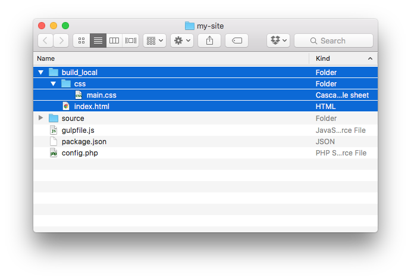

Brought to you by Tighten Co.
Starting a new site
The fastest way to start a new Jigsaw site is to use the built-in init command to scaffold the default directory structure.
If you have Jigsaw installed globally, simply run:
$ jigsaw init my-siteThis will scaffold a new Jigsaw site in a new folder called my-site in the current directory.
If you've already created a folder for your site and installed Jigsaw local to that folder with Composer, run:
$ jigsaw initThis will scaffold a new Jigsaw site in the current directory.
Directory structure
By default, Jigsaw gives you the following directory structure:

The source directory contains the actual contents of your site. This is where all of your sites pages, CSS, Javascript, images, etc. will be kept.
At the root of the directory, Jigsaw provides gulpfile.js and package.json for compiling your assets, and a config.php file where you can specify variables to be made available in your templates.
Generating your site
When you'd like to generate your site, run the build command from within your project root:
$ jigsaw build
Jigsaw will generate your static HTML and place it in the ./build_local directory by default.
Using the default site structure, ./build_local will look like this:

Previewing your site
To quickly preview your site, first build it using jigsaw build, then start a local PHP server:
$ php -S localhost:8000/ -t build_local
You can now view your site at http://localhost:8000 in your browser.